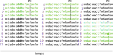

Z01 - jump¶
Nossa CPU é capaz de realizar códigos com condição, tal como:
if a > 0: b = 2 else: b = 3
ou:
while True: b = b+1
A maneira de realizarmos esse tipo de condição é com instruções de salto (jump), uma instrução de salto verifica uma determinada condição e realiza ou não o salto com base nessa condição.

A sequência de execução do código é ditada pelo Program Counter (PC), um salto acontece quando o PC sofre uma mudança da sua sequência natural:
|
v
PC: 0 1 2 3 4 x 8 9 10 11
--------------------------------> tempo
Essa mudança pode ser tanto para 'frente' quanto para trás:
|
v
PC: 0 1 2 3 4 x 0 1 2 3 4 x
--------------------------------> tempo
Salto
O salto é uma interrupção no fluxo contínuo e sequencial de um programa. O salto pode ser condicional (if...) ou incondicional.
PC¶
Para executarmos um salto é necessário alterarmos o valor do PC, no Z01 isso é feito utilizando o valor que está salvo no registrador %A. No nosso caso, antes de realizarmos um salto é necessário carregarmos em %A o endereço da qual desejamos ir caso o salto se realize (condicional).
O exemplo a seguir realiza um loop infinito (e não faz nada), ele trava nesse loop:
0: leaw $0, %A ; carrega 0 em %A (linha 0) 1: jmp ; faz o salto incondicional 2: nop ; nop
O PC desse código fica:
x x x x 0 1 2 0 1 2 0 1 2 0 1 2
jmp é o comando em assembly de salto incondicional.
Note
Repare que realizamos o comando leaw $0, %A antes de realizarmos o salto, isso é necessário pois o valor carregado em PC é o valor de %A.
nop¶
No exemplo anterior logo após o salto jmp aparece a instrução nop. O No Operation (nop) é uma instrução que não faz nada na CPU, não modifica registradores e não modifica memória.
Ela serve para 'dar' tempo a CPU para realizar o salto. Como o salto é algo que quebra o fluxo contínuo de execução do código (chamamos isso de pipeline), é necessário colocarmos essa instrução para que a CPU se organize internamente para realizar a nova sequência de instruções.
Imaginem que um modelo de carros específico está sendo fabricado em uma linha de produção, toda a linha (pipeline) está preparada para montar esse tipo de carro (ferramentas, desenhos técnicos, ...) e a fabrica decide por fabricar um carro de modelo diferente (quebra no pipeline). Duas são as alternativas: desligar toda a linha de produção para o pessoal se adequar ou deixar a linha em andamento, mas não colocar nenhum carro nela e dar tempo das pessoas se adequarem.
A opção de desligar a linha é uma analogia a 'desligarmos' o clock de parte da CPU, que é algo mais complexo. A segunda opção é a de colocar operações que não fazem nada na
CPUdando assim tempo de ajuste interno (nop).
Salto incondicional¶
O salto mais simples que podemos realizar é o salto sem condições. Ou seja, chegou nessa instrução, salta. Isso é muito utilizado para realizarmos while, a instrução que realiza o salto é o:
jmp
Warning
Antes de realizarmos qualquer salto é necessário carregarmos em %A o destino para onde desejamos ir.
label¶
Para facilitar o uso de saltos, podemos criar labels no nosso código assembly, o label é um nome que damos para a linha que desejamos saltar. Label e uma string seguida de ::
LABEL:
O código anterior ficaria o seguinte com uso de label:
0 LOOP: ; label LOOP 1 leaw $LOOP, %A ; Aqui, $LOOP seria substituido por 0 pelo montador 2 jmp 3 nop
Tip
Teste o código anterior no Z01-Simulator.
Salto condicional¶
O salto condicional é aquele que é utilizado para realizarmos if ... else, nele um salto só é executado caso uma condição específica seja satisfeita. Nossa CPU é capaz de realizar a seguintes condições:
je %D: Salta se valor de%Dé igual a0jne %D: Salta se valor de%Dfor diferente de0jg %D: Salta se valor de%Dfor maior que0jl %D: Salta se valor de%Dfor menor que0jge %D: Salta se valor de%Dfor maior ou igual a0jle %D: Salta se valor de%Dfor menor ou igual a0
%D indica o valor salvo no registrador D.
Example
considere o pseudo código a seguir:
if RAM[1] > 0: RAM[2] = 1 else: RAM[2] = 2
Esse código em assembly seria:
leaw $1, %A ; faz %A apontar para RAM[1] movw (%A), %D ; carrega o valor de RAM[1] em %D leaw $ELSE, %A ; precisamos carregar em %A o valor do salto jle %D ; salta se valor em %D for menor ou igual a zero nop ; ; if leaw $1, %A ; movw %A, %D ; leaw $2, %A ; movw %D, (%A) ; ; leaw $END, %A ; agora não podemos executar o trecho jmp ; do else, vamos pular para o fim nop ; do código ; ELSE: ; else ; leaw $2, %A ; movw %A, (%A) ; ; END: ;
Tip
Teste o código anterior no Z01-Simulator.
Hardware¶
O salto condicional utiliza do comparador que está dentro da nossa ULA, as etapas são:
- O
Control Unitfaz com que o valor do registrador%Dpasse pela ULA - Quando
%Dsai pela ULA oComparadorgera os sinaisng: menor que zerozr: igual a zero
- Esses sinais vão até o
Control Unit - O
control Unitverifica a condição do salto e os valores dengezr, se forem condizentes, fazload_PC <= '1'caso contrário, não saltaload_pc <= '0'.